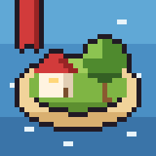

Tidewhistle Isle Washing ashore...
06:30
 Pantry 0Wood 0
Pantry 0Wood 0
Fri, Spring 1 Sunny
Pantry 0Wood 0
Night skip
Island collection
Tidewhistle Isle
Six islanders and one cat live here, each with their own personality, needs, crushes and grudges. You are the Sky Hand. Watch over them, or meddle.
Controls
- Click an islander to open their page. Type into the box there to tell them what to do, in plain words: go fishing, take a nap, go swimming with Egg, ask Lynn what she thinks of Forest, trash talk Jude to Beach, talk to Egg about the cat, flirt with Lynn, apologize to Beach, stop. You can also ask them things (how are you?, who's your crush?, what do you think of Beach?, are you scared of me?) and they answer honestly, chain orders (eat, then go fishing, after you nap, go swimming), send them places (go to the lighthouse, go to Egg's house), or make them dance, wave, calm down, wake up, avoid Jude, break up with Lynn or say "hi everyone". Typos are fine. If they don't understand, they'll say so instead of guessing.
- Couples are their own thing. They go on dates only couples go on (sunsets holding hands, picnics for two, slow dances with no music), kiss hello, give each other gifts picked for what the other loves, celebrate anniversaries, get jealous, fight and make up, and eventually propose. A yes means a wedding at the Hall two days later, and the whole island comes. Whisper kiss Lynn, take Jude on a date, watch the sunset with Egg, give Forest a gift, make up with Beach or propose to Lynn. Grab someone and their partner will yell at you.
- Press and hold an islander to pick them up. Drag them around, then flick to throw. Flick really hard and they won't get up again.
- God powers: press P or the Powers button to open the toolbar. Z hand, X smite, C meteor, V fire, B bless, G revive. Pick one, then click the island. Esc puts the hand back. The dead get graves, the living grieve and start to fear the sky, and a revive brings anyone back.
- Drag empty ground, or use WASD / arrows, to move the camera. Scroll to zoom.
- Hover a building, or press R, to look inside.
- Space pause, 1 to 5 speed, Tab next islander, F follow, N names, L journal, H hide the HUD.
The week
- Tue Fishing contest at the dock, 15:00
- Wed Supply boat arrives in the morning with food, wood and mail
- Thu Story night at the Hall, 20:00
- Fri Community dinner at the Hall, 19:00
- Sat Beach bonfire, 20:00 (game night if it rains)
- Sun Picnic in the west meadow, 12:00
Plus birthdays, storms, dolphins, shooting stars, messages in bottles, and the occasional cold. And now: whales, auroras, rainbows, coconuts, bees, buried treasure, and a stray kitten who might need a home.
Getting better
- Islanders level up whatever they practise: fishing, gardening, foraging, woodcutting, swimming, beachcombing, sandcastles, bug catching, painting, guitar and fitness. Higher levels mean better catches, bigger sandcastles, nicer paintings and music people actually enjoy. See it on their About page.
- Shells, rare fish, forest finds, bugs and treasure go into the Finds book (K). Can the island find everything?